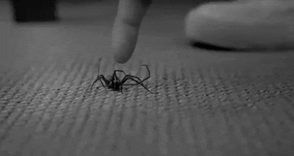
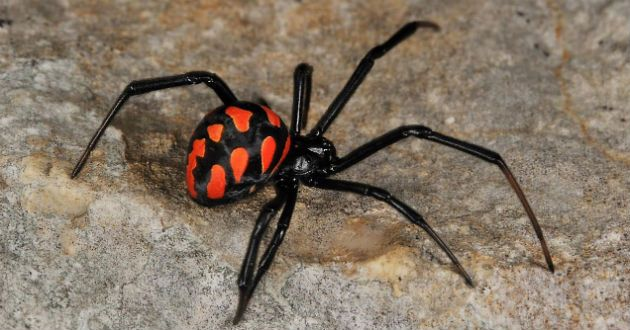

<!DOCTYPE html>
<html>

<head>
  
    <title>Mendoza Silva Emma Angelina</titles
    
    <link rel="shortcut icon" type="image/x-icon" href="llc/araña.ico">
    
     <h1 align=center>Arañas venenosas (parte 2)</h1> 
    <link rel="stylesheet" type="text/css" href="mensaje2.css">
  
</head>
    <body>
     <ul class="menu">
        
          <li><a target="_blank" href="Estructura.html" > Ir a primera parte</a></li>
         <li><a target="_blank" href="https://entomology.ca.uky.edu/ef622esp">Ir a página oficial</a></li>
                 <li><a target="_blank" href="https://www.facebook.com/groups/421535531903375">Página de facebook</a></li>
        <li><a target="_blank" href="https://www.gaceta.unam.mx/solo-dos-aranas-de-casa-son-peligrosas/">Más información</a></li>
         <li><a target="_blank" href="https://www.expertoanimal.com/tipos-de-aranas-venenosas-24522.html">Ejemplos</a></li>
        </ul>
        
        <a target="_blank" href="https://www.youtube.com/channel/UCI1IUQF1aZDG1-XBYWD4ZIg" class="pagina"> Canal de YouTube</a>
        
        
         <marquee class="marquee"></marquee>
                 
        <header align=center >¿Cuál es la araña mas venenosa del mundo?</header>
        <article>
            <p>
Contrariamente a lo que las películas nos hacen creer, las tarántulas no son el arácnido más peligroso. Aunque grandes y peludas, no son letales. De hecho, de las casi 40 mil especies reconocidas de araña, sólo un pequeñísimo porcentaje puede herir a los seres humanos, por lo que no se consideran una gran amenaza.</p>
        <p align=justified>La araña que goza de peor reputación es la viuda negra, con su característica marca roja en forma de reloj de arena en la espalda. Antes de que se descubriera un antídoto para la familia de las arañas viuda, la tasa de mortalidad para sus víctimas era del 5%. Sin embargo, quien encabeza el listado de las arañas más venenosas es la llamada araña de Sydney (Atrax robustus).</p>
        </article>
        
        <aside>
        <p>¿Sabías que?<p>
           <p>Según estudios de la Universidad de Harvard, las arañas son capaces de oír muy bien en un radio de hasta tres metros. Puede no parecer mucho, pero en comparación con su tamaño la verdad es que sí lo es, ¡menuda ventaja, nosotros no las oímos a ellas!</p> </aside>
      
         <table>
             <br/>
           <caption>Curiosidades de las arañas</caption>
           <tbody>
       <tr>
       <td>Pueden volar</td>
           <td>Si te aterrorizan las arañas, puede que este hecho no ayude a que tu fobia mejore, la verdad. No tienen alas como tal, pero las arañas son capaces de desplazarse por el aire aprovechando el viento y también sus telas.</td>
           <tr/>
               <tr>
       <td>Viven en comunidad</td>
                   <td>No creas que las arañas son animales solitarios. La verdad es que viven en colonias, a veces son miles y miles de compañeras. ¡A ver quién es el guapo que se atreve a molestar!</td>
               </tr>
               <tr>
               <td> ¡Están por todas partes!</td>
                   <td>Igual que las cucarachas, las arañas son capaces de soportar vivas cualquier tipo de clima y las más adversas circunstancias. Hay muchísimas especies de arañas y están repartidas por literalmente todo el mundo, incluso en la Antártida.</td>
               </tr>
           </tbody>
       </table>
       <p>Sonido real de araña</p>
       <embed src="llc/audio.mp3" controls autoplay>
       <p>Curiosidades de las arañas que probablemente no conocías:</p>
        <embed src="llc/v.mp4" width="400px" height="248px">
        
        <h2 align=center>Las arañas nunca atacan de forma espontánea a los humanos</h2>
        <section>
        <p>Las arañas "nunca" atacan de forma espontánea al hombre, y son pocos los animales que lo hacen de forma "gratuita", si bien es algo que hacen algunas avispas y abejas si se pasa cerca de ellas, dijo a Efe el catedrático de Zoología de la Facultad de Biología de la Universidad de La Laguna, Pedro Oromí.</p>
            <p>En el caso de las arañas hay que hacerles algo previamente, sino no atacarán, indicó Pedro Oromí durante una entrevista en la que también explicó que se trata de animales que siempre son predadores y sólo comen lo que cazan, pues no son carroñeras y si encuentran una mosca muerta no la comen.</p>
        </section>
        
       
        <p>Sub órdenes de las arañas</p>
       <ol>
       <li> Lifístidos</li>
        <li>Migalomorfos con 314 géneros</li>
           <li>Araneomorfos con 92 familias</li>
           
       
       </ol>
   <footer>Mendoza Silva Emma Angelina  2IM1</footer>     
    
    </body>
</html>
